# For execution on a local, multicore CPU with excess RAM
options(mc.cores = parallel::detectCores())
# To avoid recompilation of unchanged Stan programs
rstan_options(auto_write = TRUE)14 Adventures in Covariance
Some options to facilitate the computations
The default theme used by ggplot2
theme_set(ggthemes::theme_stata(base_size = 11, base_family = "sans",
scheme = "s2color"))14.1 Varying slopes by construction
14.1.1 Simulate the population
simCafes <- list()
simCafes <- within(simCafes, {
# a := average morning wait time
# b := average difference afternoon wait time
Mu <- c("a" = 3.5, "b" = -1)
# a := std dev of intercepts
# b := std dev of slopes
sigmas <- c("a" = 1, "b" = 0.5)
# correlation between intercepts and slopes
rho <- -0.7
cov_ab <- prod(sigmas) * rho
})McElreath mentions a difficulty using the matrix function. He misses the argument byrow which resolve this.
# use byrow = TRUE to solve McElrath's issue
matrix(1:4, nrow = 2, ncol = 2, byrow = TRUE) [,1] [,2]
[1,] 1 2
[2,] 3 4we get the covariance matrix sigma as follows
simCafes <- within(simCafes, {
# matrix of correlation
Rho <- matrix(c(1, rho, rho, 1), nrow = 2)
# covariance matrix
Sigma <- diag(sigmas) %*% Rho %*% diag(sigmas)
})and we simulate the bivariate normal distribution
simCafes <- within(simCafes, {
n_cafes <- 20
set.seed(1409)
vary_effects <- MASS::mvrnorm(n = n_cafes, mu = Mu, Sigma = Sigma) |>
as.data.frame() |>
mutate(cafe = seq_len(n_cafes)) |>
relocate(cafe)
})
# glimpse(simCafes$vary_effects)and we plot the simulated data which represents the intercept and slope
simCafes$vary_effects |>
ggplot(aes(x = a, y = b)) +
geom_point(shape = 1, size = 3, color = "purple") +
lapply(X = 1:5 / 5, FUN = function(x) {
stat_ellipse(type = "norm", level = x, linetype = "dotted", size = 0.25)}) +
theme(legend.position = "none") +
labs(title = sprintf("Distribution of intercept and slopes for %d cafes",
simCafes$n_cafes),
x = "intercepts (a_cafe)", y = "slope (b_cafe)")Warning: Using `size` aesthetic for lines was deprecated in ggplot2 3.4.0.
ℹ Please use `linewidth` instead.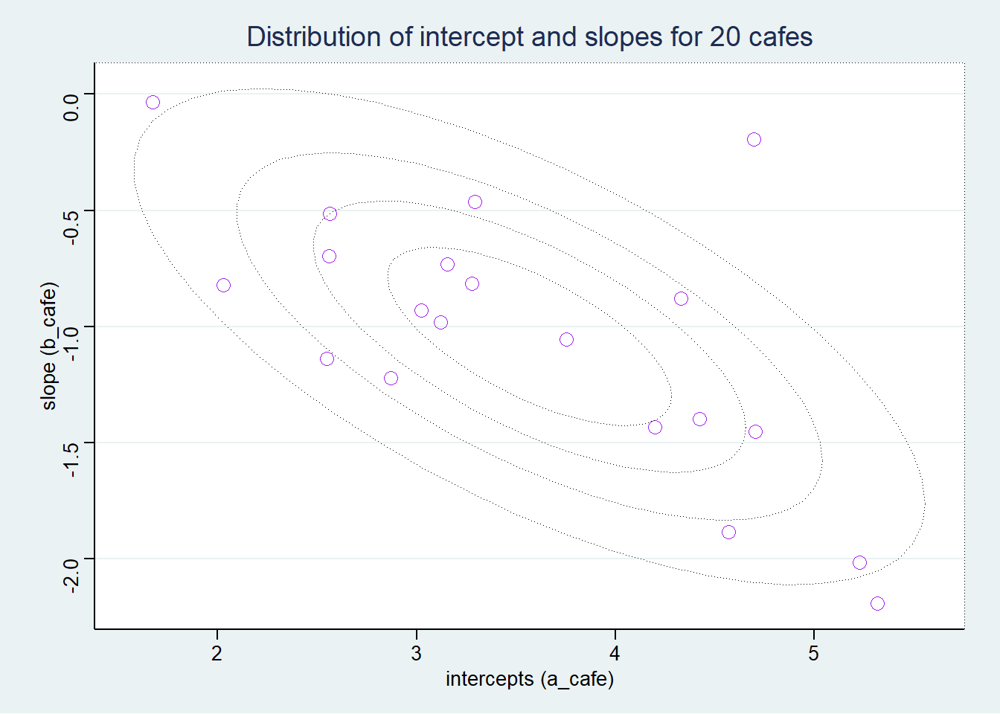
14.1.2 Simulate the observations (visits by cafe)
Now using the simulated intercepts and slopes, we create the simulated visits to each cafe.
simCafes <- within(simCafes, {
n_visits <- 10 # nb of visits to each cafe by robot
sigma <- 0.5 # std dev within cafes
set.seed(1409)
data <- vary_effects |>
expand(nesting(cafe, a, b), visit = seq_len(n_visits)) |>
mutate(afternoon = rep(0:1, times = n()/2)) |>
mutate(mu = a + b * afternoon) |>
mutate(wait = rnorm(n = n(), mean = mu, sd = sigma))
})
# glimpse(simCafes$vary_effects)
# glimpse(simCafes$data)and plot the simulated observations.
simCafes$data |>
mutate(afternoon = if_else(afternoon == 0, "M", "A"),
day = rep(rep(1:5, each = 2), times = simCafes$n_cafes),
label = paste("cafe", simCafes$data$cafe)) |>
filter(cafe %in% c(1, 5)) |>
ggplot(aes(x = visit, y = wait, group = day)) +
geom_point(aes(color = afternoon), size = 2) +
geom_line(color = "green") +
scale_color_manual(values = c("M" = "royalblue", "A" = "hotpink")) +
theme(legend.position = "none") +
labs(title = "Varying slopes simulation") +
facet_wrap(~ label, ncol = 1)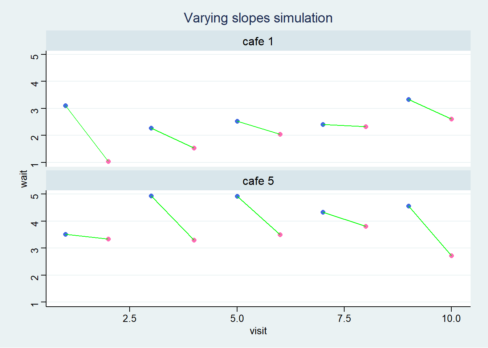
14.1.3 The varying slopes model
14.1.3.1 The model
\[ \begin{align*} wait_i &\sim \mathcal{N}(\mu_i, \sigma) \\ \mu_i &= \alpha_{cafe[i]} + \beta_{cafe[i]} \cdot afternoon_i \\ \begin{bmatrix} \alpha_{cafe} \\ \beta_{cafe} \end{bmatrix} &\sim \mathcal{MVNormal}( \begin{bmatrix} \alpha \\ \beta \end{bmatrix} , \bf{\Sigma} ) \\ \bf{\Sigma} &= \begin{bmatrix} \sigma_{\alpha} & 0 \\ 0 & \sigma_{\beta} \end{bmatrix} \begin{bmatrix} 1 & \rho \\ \rho & 1 \end{bmatrix} \begin{bmatrix} \sigma_{\alpha} & 0 \\ 0 & \sigma_{\beta} \end{bmatrix} \\ \alpha &\sim \mathcal{N}(0, 10) \\ \beta &\sim \mathcal{N}(0, 10) \\ \sigma &\sim \mathcal{HalfCauchy}(0, 1) \\ \sigma_{\alpha} &\sim \mathcal{HalfCauchy}(0, 1) \\ \sigma_{\beta} &\sim \mathcal{HalfCauchy}(0, 1) \\ \rho &\sim \mathcal{LKJcorr}(K=2) \end{align*} \]
14.1.3.2 LKJ prior
We use the ggdist package to illustrate the LKJ distribution.
lkj_dist <- list()
lkj_dist <- within(lkj_dist, {
df <- crossing(K = 2:4, eta = 1:3, x = seq(from = -1, to = 1, by = 0.05)) |>
mutate(
id = K^eta,
label_K = paste0("K==", K),
label_eta = paste0("eta==", eta),
dens = ggdist::dlkjcorr_marginal(x = x, K = K, eta = eta)
)
p <- df |>
ggplot(aes(x = x, y = dens, color = id)) +
geom_line(size = 1) +
scale_y_continuous(breaks = c(0, 0.5, 1)) +
scale_color_paletteer_c("palr::sst_pal") +
theme(legend.position = "none") +
facet_grid(facets = label_eta ~ label_K, scales= "fixed", labeller = label_parsed) +
labs(title = "Lewandowski-Kurowicka-Joe Distribution",
x = "correlation", y = "density")
})Warning in !is_integerish(K) || K < 2: 'length(x) = 369 > 1' in coercion to
'logical(1)'# glimpse(lkj_dist$df)
lkj_dist$p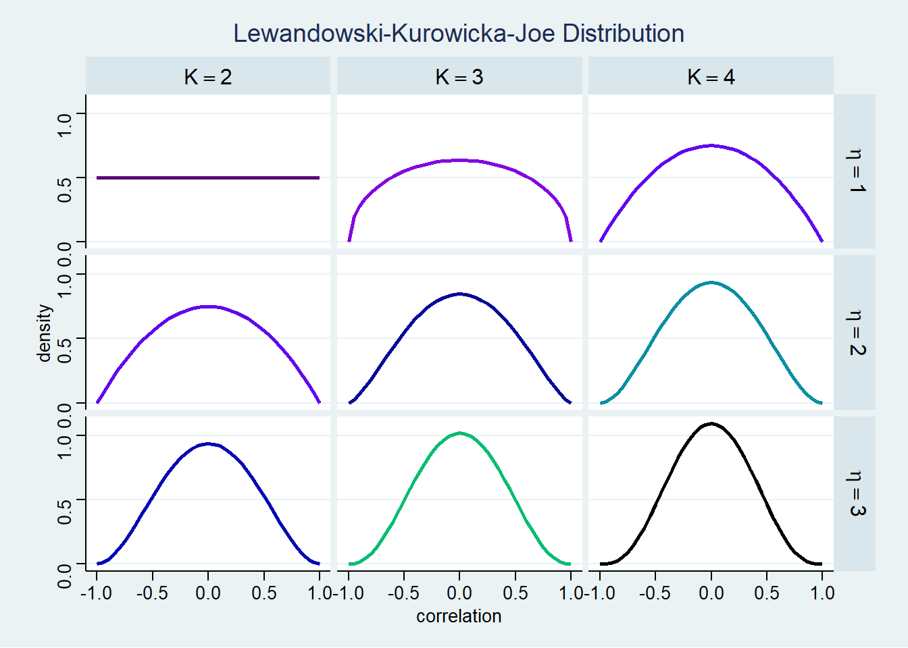
tictoc::tic(msg = sprintf("run time of %s, use the cache.", "60 secs."))
fit14_01 <- xfun::cache_rds({
out <- brm(
data = simCafes$data,
family = gaussian,
formula = wait ~ 1 + afternoon + (1 + afternoon | cafe),
prior = c(
prior(normal(5, 2), class = Intercept),
prior(normal(-1, 0.5), class = b),
prior(exponential(1), class = sd),
prior(exponential(1), class = sigma),
prior(lkj(2), class = cor)),
sample_prior = TRUE,
iter = 1000, warmup = 500, chains = 2,
cores = detectCores(), seed = 1423)
add_criterion(out, c("loo", "waic"))},
file = "ch14_fit14_01", rerun = FALSE)
tictoc::toc()run time of 60 secs., use the cache.: 0.14 sec elapsedpost14_01 <- list()
post14_01 <- within(post14_01, {
prior <- prior_draws(x = fit14_01)
post <- tidy_draws(model = fit14_01)
# dataframe of correlations to plot
corr = data.frame("value" = c(prior$cor_cafe, post$cor_cafe__Intercept__afternoon),
"id" = c(rep("prior", nrow(prior)), rep("post", nrow(post))))
coefs <- fit14_01 |>
spread_draws(b_Intercept, b_afternoon, r_cafe[cafe, term]) |>
pivot_wider(id_cols = c("b_Intercept", "b_afternoon", "cafe"),
names_from = "term", values_from = "r_cafe") |>
group_by(cafe) |>
summarize(b_Intercept = mean(b_Intercept), b_afternoon = mean(b_afternoon),
r_afternoon = mean(afternoon), r_Intercept = mean(Intercept)) |>
mutate(Intercept = b_Intercept + r_Intercept,
afternoon = b_afternoon + r_afternoon) |>
select(cafe, Intercept, afternoon) |>
identity()
all <- simCafes$vary_effects |>
rename("Intercept" = a, "afternoon" = b)
all <- bind_rows("real" = all, "post" = coefs, .id = "id")
})Warning: `gather_()` was deprecated in tidyr 1.2.0.
ℹ Please use `gather()` instead.
ℹ The deprecated feature was likely used in the tidybayes package.
Please report the issue at <https://github.com/mjskay/tidybayes/issues/new>.# glimpse(post14_01$post)
# glimpse(post14_01$coefs)
# glimpse(post14_01$all)plot14_01 <- list()
plot14_01 <- within(plot14_01, {
cor <- post14_01$corr |>
ggplot(aes(x = value, color = id, linetype = id)) +
geom_density(size = 1, adjust = 0.75) +
scale_color_manual(values = c("prior" = "black", "post" = "blue")) +
scale_linetype_manual(values = c("prior" = "longdash", "post" = "solid")) +
theme(legend.position = c(0.8, 0.8), legend.title = element_blank()) +
labs(title = "Posterior and Prior distribution of the correlation",
x = "correlation")
})
plot14_01$cor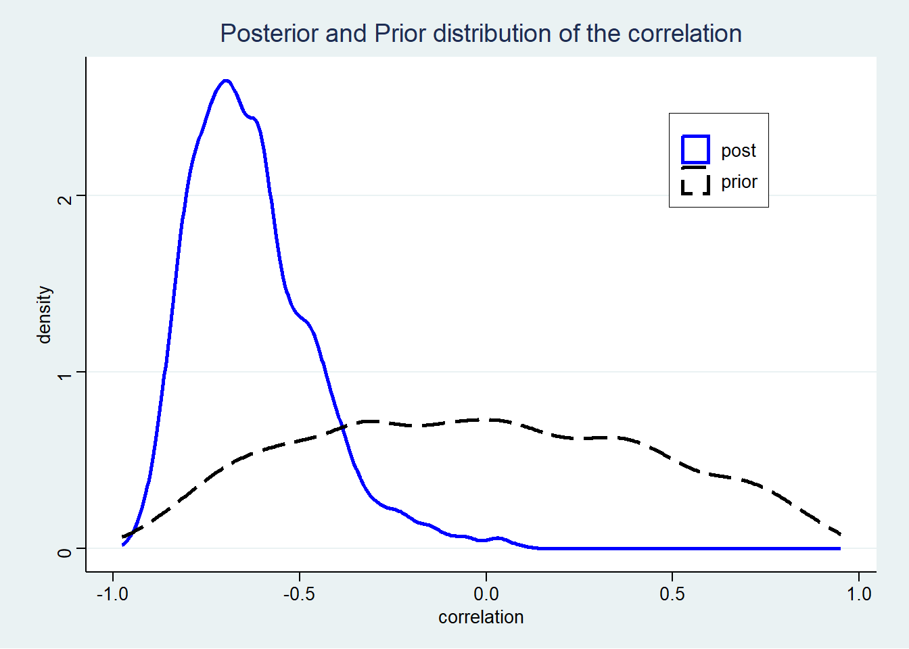
pred14_01 <- list()
pred14_01 <- within(pred14_01, {
pred_df <- simCafes$data |>
group_by(cafe, afternoon) |>
summarise(mwait = mean(wait)) |>
add_predicted_draws(object = fit14_01) |>
mean_qi(.width = 0.89) |>
mutate(term = if_else(afternoon == 0, "Intercept", "afternoon"))
real <- pred_df |>
select(cafe, term, mwait) |>
pivot_wider(id_cols = cafe, names_from = term, values_from = mwait)
pred <- pred_df |>
select(cafe, term, .prediction) |>
pivot_wider(id_cols = cafe, names_from = term, values_from = .prediction)
all <- bind_rows("real" = real, "pred" = pred, .id = "id")
})`summarise()` has grouped output by 'cafe'. You can override using the
`.groups` argument.# glimpse(pred14_01$all)
# glimpse(simCafes$data)plot14_01 <- within(plot14_01, {
coefs <- post14_01$all |>
ggplot(mapping = aes(x = Intercept, y = afternoon, group = cafe, color = id)) +
lapply(X = 1:5 / 5, FUN = function(x) {
stat_ellipse(data = post14_01$all, mapping = aes(x = Intercept, y = afternoon),
inherit.aes = FALSE,
geom = "polygon", type = "norm", level = x, linewidth = 1/5,
color = "dodgerblue", fill = "transparent")}) +
geom_point() +
geom_line(color = "black") +
scale_color_paletteer_d("awtools::spalette", direction = 1) +
theme(legend.position = c(0.2, 0.2),
legend.title = element_blank()) +
labs(title = "Coefficients and shrinkage",
x = "Intercept", y = "Slope")
wait <- pred14_01$all |>
ggplot(mapping = aes(x = Intercept, y = afternoon, group = cafe, color = id)) +
lapply(X = 1:5 / 5, FUN = function(x) {
stat_ellipse(data = pred14_01$all, mapping = aes(x = Intercept, y = afternoon),
inherit.aes = FALSE,
geom = "polygon", type = "norm", level = x, linewidth = 1/5,
color = "dodgerblue", fill = "transparent")}) +
geom_point() +
geom_line(color = "black") +
scale_color_paletteer_d("awtools::spalette", direction = -1) +
theme(legend.position = c(0.8, 0.2),
legend.title = element_blank()) +
labs(title = "Waiting time and shrinkage",
x = "morning wait", y = "afternoon wait")
})
# plot14_01$coefs
wrap_plots(plot14_01[c("coefs", "wait")]) +
plot_annotation(title = "Shrinkage in two dimensions")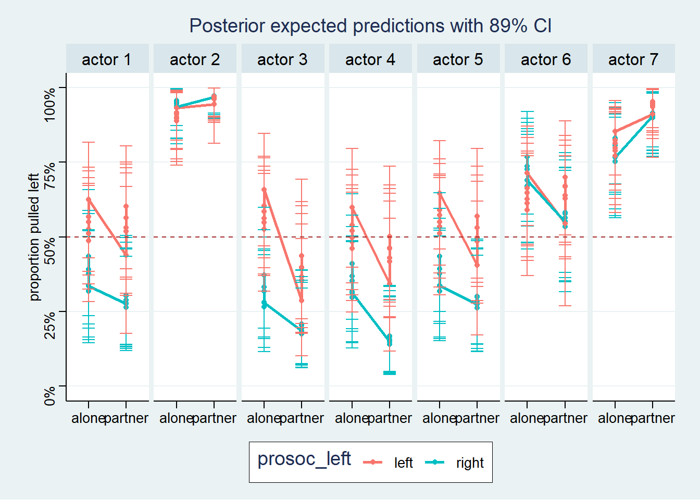
14.2 Advanced varying slopes
data(chimpanzees)
dataChimp <- chimpanzees |>
mutate(block = factor(block),
actor = factor(actor),
treatment = factor(1 + prosoc_left + 2 * condition, levels = 1:4,
labels = c("AR", "AL", "PR", "PL")))
rm(chimpanzees)
dataChimp |>
skim() |>
mutate(across(.cols = where(is.numeric), .fns = round, digits = 2))| Name | dataChimp |
| Number of rows | 504 |
| Number of columns | 9 |
| _______________________ | |
| Column type frequency: | |
| factor | 3 |
| numeric | 6 |
| ________________________ | |
| Group variables | None |
Variable type: factor
| skim_variable | n_missing | complete_rate | ordered | n_unique | top_counts |
|---|---|---|---|---|---|
| actor | 0 | 1 | FALSE | 7 | 1: 72, 2: 72, 3: 72, 4: 72 |
| block | 0 | 1 | FALSE | 6 | 1: 84, 2: 84, 3: 84, 4: 84 |
| treatment | 0 | 1 | FALSE | 4 | AR: 126, AL: 126, PR: 126, PL: 126 |
Variable type: numeric
| skim_variable | n_missing | complete_rate | mean | sd | p0 | p25 | p50 | p75 | p100 | hist |
|---|---|---|---|---|---|---|---|---|---|---|
| recipient | 252 | 0.5 | 5.00 | 2.00 | 2 | 3.00 | 5.0 | 7.00 | 8 | ▇▃▃▃▇ |
| condition | 0 | 1.0 | 0.50 | 0.50 | 0 | 0.00 | 0.5 | 1.00 | 1 | ▇▁▁▁▇ |
| trial | 0 | 1.0 | 36.50 | 20.80 | 1 | 18.75 | 36.5 | 54.25 | 72 | ▇▇▇▇▇ |
| prosoc_left | 0 | 1.0 | 0.50 | 0.50 | 0 | 0.00 | 0.5 | 1.00 | 1 | ▇▁▁▁▇ |
| chose_prosoc | 0 | 1.0 | 0.57 | 0.50 | 0 | 0.00 | 1.0 | 1.00 | 1 | ▆▁▁▁▇ |
| pulled_left | 0 | 1.0 | 0.58 | 0.49 | 0 | 0.00 | 1.0 | 1.00 | 1 | ▆▁▁▁▇ |
14.2.0.1 The model
$$ \[\begin{align*} L_i &\sim \mathcal{Binomial}(1, p_i) \\ logit(p_i) &\sim \gamma_{treatment[i]} + \alpha_{actor[i], treatment[i]} + \beta_{block[i], treatment[i]} \\ \gamma_{treatment[i]} &\sim \mathcal{N}(0, 1), \, \text{for } i = 1 \ldots 4 \\ \begin{bmatrix} \alpha_{j, 1} \\ \alpha_{j, 2} \\ \alpha_{j, 3} \\ \alpha_{j, 4} \end{bmatrix} &\sim \mathcal{MVNormal}( \begin{bmatrix} 0 \\ 0 \\ 0 \\ 0\\ \end{bmatrix} , \bf{\Sigma_{actor}} ) \\ \begin{bmatrix} \beta_{j, 1} \\ \beta_{j, 2} \\ \beta_{j, 3} \\ \beta_{j, 4} \end{bmatrix} &\sim \mathcal{MVNormal}( \begin{bmatrix} 0 \\ 0 \\ 0 \\ 0 \\ \end{bmatrix} , \bf{\Sigma_{block}} ) \\ \bf{\Sigma_{actor}} &= \begin{bmatrix} \sigma_{factor} & 0 \\ 0 & \sigma_{factor} \end{bmatrix} \cdot \begin{bmatrix} 1 & \rho_{factor} \\ \rho_{factor} & 1 \end{bmatrix} \cdot \begin{bmatrix} \sigma_{factor} & 0 \\ 0 & \sigma_{factor}\\ \end{bmatrix} \\ \bf{\Sigma_{block}} &= \begin{bmatrix} \sigma_{block} & 0 \\ 0 & \sigma_{block} \end{bmatrix} \cdot \begin{bmatrix} 1 & \rho_{block} \\ \rho_{block} & 1 \end{bmatrix} \cdot \begin{bmatrix} \sigma_{block} & 0 \\ 0 & \sigma_{block}\\ \end{bmatrix} \\ \sigma_{actor, j} &\sim \mathcal{Exponential}(1), \, \text{for } i = 1 \ldots 4 \\ \sigma_{block, j} &\sim \mathcal{Exponential}(1), \, \text{for } i = 1 \ldots 4 \\ \rho_{actor}, \rho_{block} &\sim \mathcal{LKJcorr}(2) \end{align*}\] $$
We don’t do model m14.2 since it is only done to illustrate centralized vs non-centralized parametrization and that brms uses only non-centralized parametrization.
tictoc::tic(msg = sprintf("run time of %s, use the cache.", "80 secs."))
fit14_03 <- xfun::cache_rds({
out <- brm(
data = dataChimp,
family = bernoulli,
formula = bf(pulled_left ~ 0 + treatment + (0 + treatment | actor) + (0 + treatment | block)),
prior = c(
prior(normal(0, 1), class = b),
prior(exponential(1), class = sd, group = actor),
prior(exponential(1), class = sd, group = block),
prior(lkj(2), class = cor, group = actor),
prior(lkj(2), class = cor, group = block)),
iter = 1000, warmup = 500, chains = 2,
cores = detectCores(), seed = 1427)
add_criterion(out, c("loo", "waic"))},
file = "ch14_fit14_03", rerun = FALSE)
tictoc::toc()run time of 80 secs., use the cache.: 0.19 sec elapsedThe plot is slightly different than what McElreath has. The open circle represent the actual results and the solid circles are the predicted mean.
plot14_03 <- list()
plot14_03 <- within(plot14_03, {
df <- dataPredicted <- dataChimp |>
group_by(actor, treatment, block) |>
summarize(prop = mean(pulled_left)) |>
ungroup() |>
add_epred_draws(fit14_03) |>
summarize(prop = mean(prop),
mean_qi(.epred, .width = 0.89) ) |>
rename(".epred" = y, ".lower" = ymin, ".upper" = ymax)
# every block is different but, for plotting, we use the average of the blocks
df <- df |>
group_by(actor, treatment) |>
summarize(
prop = mean(prop),
.epred = mean(.epred),
.lower = mean(.lower),
.upper = mean(.upper)) |>
mutate(label = paste("actor", actor)) |>
mutate(condition = if_else(substring(treatment, 1, 1) == "A", "alone", "partner"),
condition = as.factor(condition),
prosoc_left = if_else(substring(treatment, 2, 2) == "R", "right", "left"),
prosoc_left = as.factor(prosoc_left)) |>
mutate(label = paste("actor", actor))
p <- df |>
ggplot(aes(x = treatment, y = .epred,
group = prosoc_left, color = prosoc_left,
fill = prosoc_left)) +
geom_line(linetype = "solid", size = 1) +
geom_point(shape = 16, size = 3) +
geom_line(aes(y = prop), linetype = "solid", size = 1) +
geom_point(aes(y = prop), shape = 1, size = 3) +
geom_errorbar(aes(ymin = .lower, ymax = .upper), width = 1/3) +
geom_hline(yintercept = 0.5, color = "brown", linetype = 2) +
scale_y_continuous(labels = scales::label_percent()) +
scale_color_paletteer_d("jcolors::pal9") +
coord_cartesian(ylim = c(0, 1)) +
theme(legend.position = "bottom") +
labs(title = "Posterior expected predictions with 89% CI",
subtitle = "Open circles are actual results, solid circles are mean predictions.",
x = NULL, y = "proportion pulled left") +
facet_grid(. ~ label)
})`summarise()` has grouped output by 'actor', 'treatment'. You can override
using the `.groups` argument.
`summarise()` has grouped output by 'actor', 'treatment', 'block', 'prop'. You
can override using the `.groups` argument.
`summarise()` has grouped output by 'actor'. You can override using the
`.groups` argument.# glimpse(plot14_03$df)
plot14_03$p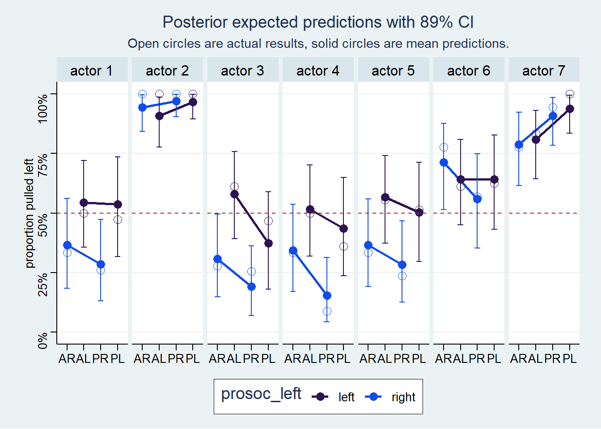
14.3 Instruments and Causal designs
ggdag::dagify(E ~ U, W ~ U, W ~ E) |>
ggdag::ggdag_classic(layout = "sugiyama", text_col = "royalblue") +
ggdag::theme_dag_blank(
panel.background = element_rect(fill = "snow", color = "snow"))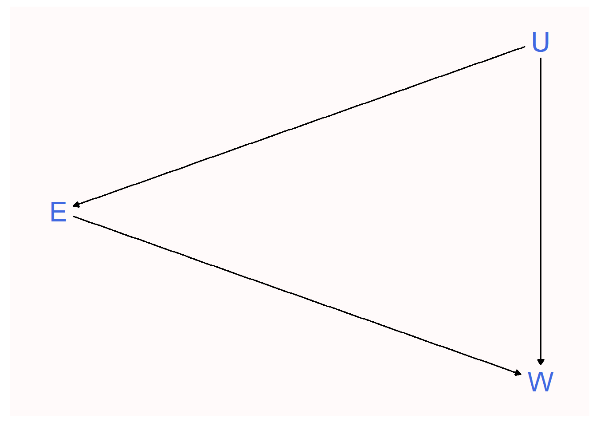
In causal terms, an instrument variable is a variable that acts like a natural experiment on the exposure \(E\).
In mathematical terms the instrumental variable \(Q\) is characterized as follows:
- Independent of \(U\), i.e. \(Q \perp\!\!\!\perp U\)
- Not independent of \(E\), i.e. \(Q \not\!\perp\!\!\!\perp E\)
- Has no effect on \(W\) except through \(E\), also called the exclusion condition
The exclusion restriction cannot be tested, and it is often implausible.
In the education and wage example, the simplest instrument variable \(Q\) would be as follows
ggdag::dagify(E ~ U + Q, W ~ U, W ~ E) |>
ggdag::ggdag_classic(layout = "sugiyama", text_col = "royalblue") +
ggdag::theme_dag_blank(
panel.background = element_rect(fill = "snow", color = "snow"))
We now use a simulation to illustrate.
With real data, you never know what the right anser is. This is h=why studying simulated examples is so important.
simInstrument <- list()
simInstrument <- within(simInstrument, {
n = 500L
U <- rnorm(n = n)
Q <- sample(x = 1:4, size = n, replace = TRUE)
E <- rnorm(n = n, mean = U + Q)
# we assume that the true influence of E (education)
# on W (wage) is zero. Just for the sake of the example.
W <- rnorm(n = n, mean = U + 0 * E)
df <- data.frame(
"W" = scale(W),
"E" = scale(E),
"Q" = scale(Q)
)
})
# glimpse(simInstrument$df)tictoc::tic(msg = sprintf("run time of %s, use the cache.", "60 secs."))
fit14_04 <- xfun::cache_rds({
out <- brm(
data = simInstrument$df,
family = gaussian,
formula = W ~ 1 + E,
prior = c(
prior(normal(0, 0.2), class = Intercept),
prior(normal(0, 0.5), class = b),
prior(exponential(1), class = sigma)),
iter = 1000, warmup = 500, chains = 2,
cores = detectCores(), seed = 1429)
add_criterion(out, c("loo", "waic"))},
file = "ch14_fit14_04", rerun = FALSE)
tictoc::toc()run time of 60 secs., use the cache.: 0.16 sec elapsedwhich gives us the results
summarize_draws(fit14_04, "mean", "sd", ~quantile(.x, probs = c(0.055, 0.945)),
default_convergence_measures()) |>
filter(!grepl("^lp", x = variable)) |>
mutate(across(.cols = where(is.numeric), .fns = round, digits = 2),
across(.cols = starts_with("ess"), .fns = as.integer))# A tibble: 3 × 8
variable mean sd `5.5%` `94.5%` rhat ess_bulk ess_tail
<chr> <dbl> <dbl> <dbl> <dbl> <dbl> <int> <int>
1 b_Intercept 0 0.04 -0.06 0.06 1 1103 636
2 b_E 0.4 0.04 0.34 0.46 1 970 696
3 sigma 0.92 0.03 0.87 0.96 1 1172 843The value \(b_E\) should have been close to zero. The oncorrect value is caused by the confounding effect of \(U\).
Now, lets see what happens when we include the instrumental variable \(Q\).
tictoc::tic(msg = sprintf("run time of %s, use the cache.", "60 secs."))
fit14_05 <- xfun::cache_rds({
out <- brm(
data = simInstrument$df,
family = gaussian,
formula = W ~ 1 + E + Q,
prior = c(
prior(normal(0, 0.2), class = Intercept),
prior(normal(0, 0.5), class = b),
prior(exponential(1), class = sigma)),
iter = 1000, warmup = 500, chains = 2,
cores = detectCores(), seed = 1429)
add_criterion(out, c("loo", "waic"))},
file = "ch14_fit14_05", rerun = FALSE)
tictoc::toc()run time of 60 secs., use the cache.: 0.16 sec elapsedwhich gives us the results
summarize_draws(fit14_05, "mean", "sd", ~quantile(.x, probs = c(0.055, 0.945)),
default_convergence_measures()) |>
filter(!grepl("^lp", x = variable)) |>
mutate(across(.cols = where(is.numeric), .fns = round, digits = 2),
across(.cols = starts_with("ess"), .fns = as.integer))# A tibble: 4 × 8
variable mean sd `5.5%` `94.5%` rhat ess_bulk ess_tail
<chr> <dbl> <dbl> <dbl> <dbl> <dbl> <int> <int>
1 b_Intercept 0 0.04 -0.06 0.06 1 896 646
2 b_E 0.6 0.05 0.52 0.68 1.01 941 577
3 b_Q -0.35 0.05 -0.43 -0.27 1 843 650
4 sigma 0.87 0.03 0.83 0.92 1 872 737The results are now even more confusing as the influence of \(Q\) makes the effect of \(E\) difficult to evaluate on its own.
So lets use the instrumental variable \(Q\) again but taking into account the covariance of \(E\) and \(Q\). That is, we express the model as a *multivariate statistical model as follows
\[ \begin{align*} \begin{bmatrix} W_i \\ E_i \\ \end{bmatrix} &\sim \mathcal{MVNormal}( \begin{bmatrix} \mu_{W, i} \\ \mu_{E, i} \end{bmatrix}, \bf{\Sigma} ) \\ \mu_{W, i} &= \alpha_W + \beta_{EW}E_i \\ \mu_{E, i} &= \alpha_E + \beta_{QE}Q_i \\ \bf{\Sigma} &= \begin{bmatrix} \sigma_W & 0 \\ 0 & \sigma_E \end{bmatrix} \cdot \begin{bmatrix} 1 & \rho \\ \rho & 1 \end{bmatrix} \cdot \begin{bmatrix} \sigma_W & 0 \\ 0 & \sigma_E \end{bmatrix} \\ \alpha_W, \alpha_E &\sim \mathcal{N}(0, 0.2) \\ \beta_{EW}, \beta_{QE} &\sim \mathcal{N}(0, 0.5) \\ \sigma_W, \sigma_E &\sim \mathcal{Exponential}(1) \\ \rho &\sim \mathcal{LKJ}(2) \end{align*} \]
and the final fit is
tictoc::tic(msg = sprintf("run time of %s, use the cache.", "90 secs."))
fit14_06 <- xfun::cache_rds({
out <- brm(
data = simInstrument$df,
family = gaussian,
formula = bf(W ~ 1 + E) + bf(E ~ 1 + Q),
prior = c(
prior(normal(0, 0.2), class = Intercept, resp = E),
prior(normal(0, 0.5), class = b, resp = E),
prior(exponential(1), class = sigma, resp = E),
prior(normal(0, 0.2), class = Intercept, resp = W),
prior(normal(0, 0.5), class = b, resp = W),
prior(exponential(1), class = sigma, resp = W),
prior(lkj(2), class = rescor)),
iter = 1000, warmup = 500, chains = 2,
cores = detectCores(), seed = 1429)
add_criterion(out, c("loo", "waic"))},
file = "ch14_fit14_06", rerun = FALSE)
tictoc::toc()run time of 90 secs., use the cache.: 0.16 sec elapsedwhich gives us the results
summarize_draws(fit14_06, "mean", "sd", ~quantile(.x, probs = c(0.055, 0.945)),
default_convergence_measures()) |>
filter(!grepl("^lp", x = variable)) |>
mutate(across(.cols = where(is.numeric), .fns = round, digits = 2),
across(.cols = starts_with("ess"), .fns = as.integer))# A tibble: 7 × 8
variable mean sd `5.5%` `94.5%` rhat ess_bulk ess_tail
<chr> <dbl> <dbl> <dbl> <dbl> <dbl> <int> <int>
1 b_W_Intercept 0 0.04 -0.07 0.07 1 899 640
2 b_E_Intercept 0 0.04 -0.06 0.06 1 823 701
3 b_W_E 0 0.08 -0.13 0.13 1.01 452 738
4 b_E_Q 0.58 0.04 0.52 0.64 1 752 727
5 sigma_W 1 0.04 0.93 1.07 1.01 513 738
6 sigma_E 0.82 0.02 0.78 0.86 1 895 662
7 rescor__W__E 0.49 0.06 0.39 0.58 1.01 444 73114.5 Continuous categories and the Gaussian process
14.5.1 Spatial autocorrelation in Oceanic tools
14.5.1.1 Data
The observed data is as follows. All the data is put in 2 dataframes to be able to analyse it as graph data.
- nodes_df: The data related to the nodes
- edges_df: The data related to the edges, e.g. the distance between the cultures
First we define the nodes dataframes
data(Kline2)
dataKline <- list()
dataKline <- within(dataKline, {
nodes_df <- Kline2 |>
mutate(log_pop_s = as.vector(scale(logpop)),
cid = factor(contact, levels = c("low", "high"))) |>
# latitude and longitude coverted to thousands of km
# using the average distance at the equator
mutate(lat_pos = lat * 0.11132,
lon2_pos = lon2 * 0.11132)
})
rm(Kline2)
dataKline$nodes_df |>
skim() |>
select(-n_missing, -complete_rate) |>
mutate(across(.cols = where(is.numeric), .fns = round, digits = 2))| Name | dataKline$nodes_df |
| Number of rows | 10 |
| Number of columns | 13 |
| _______________________ | |
| Column type frequency: | |
| factor | 3 |
| numeric | 10 |
| ________________________ | |
| Group variables | None |
Variable type: factor
| skim_variable | ordered | n_unique | top_counts |
|---|---|---|---|
| culture | FALSE | 10 | Chu: 1, Haw: 1, Lau: 1, Mal: 1 |
| contact | FALSE | 2 | hig: 5, low: 5 |
| cid | FALSE | 2 | low: 5, hig: 5 |
Variable type: numeric
| skim_variable | mean | sd | p0 | p25 | p50 | p75 | p100 | hist |
|---|---|---|---|---|---|---|---|---|
| population | 34109.10 | 84793.03 | 1100.00 | 3897.75 | 7700.00 | 12050.00 | 275000.00 | ▇▁▁▁▁ |
| total_tools | 34.80 | 17.85 | 13.00 | 22.50 | 30.50 | 42.25 | 71.00 | ▇▃▃▂▂ |
| mean_TU | 4.83 | 1.14 | 3.20 | 4.00 | 4.85 | 5.30 | 6.60 | ▅▅▇▂▅ |
| lat | -5.22 | 13.51 | -21.20 | -15.30 | -9.70 | 5.03 | 19.90 | ▇▇▂▅▂ |
| lon | 93.71 | 137.16 | -175.20 | 140.30 | 151.25 | 167.12 | 178.10 | ▂▁▁▁▇ |
| lon2 | -14.29 | 19.89 | -41.90 | -28.93 | -13.25 | -4.23 | 24.40 | ▇▂▇▅▂ |
| logpop | 8.98 | 1.53 | 7.00 | 8.26 | 8.95 | 9.39 | 12.52 | ▃▇▃▁▂ |
| log_pop_s | 0.00 | 1.00 | -1.29 | -0.47 | -0.02 | 0.27 | 2.32 | ▃▇▃▁▂ |
| lat_pos | -0.58 | 1.50 | -2.36 | -1.70 | -1.08 | 0.56 | 2.22 | ▇▇▂▅▂ |
| lon2_pos | -1.59 | 2.21 | -4.66 | -3.22 | -1.47 | -0.47 | 2.72 | ▇▂▇▅▂ |
# glimpse(dataKline$df)and we will also use a matrix of the longitudinal and latitudinal relative positions of the societies. This is an approximation only as it used the km per degree at the equator which is 111.32 km per degree at the equator. This gives the following relative position matrix.
data(islandsDistMatrix)
dataKline <- within(dataKline, {
dist <- islandsDistMatrix
# create the edges dataframe
edges_df <- dist
# set lower triangle and diagonal to 0 to avoid double values.
# zeros can be removed later
edges_df[lower.tri(edges_df, diag = FALSE)] <- NA_real_
# The distances in dataframe format
edges_df <- dist |>
as.data.frame() |>
tibble::rownames_to_column(var = "x") |>
pivot_longer(cols = -x, names_to = "y", values_to = "dist")
})
rm(islandsDistMatrix)and we can visualize the distance in a heatmap
heatmaply::heatmaply(
x = dataKline$dist,
cellnote = round(dataKline$dist, 1),
colors = unclass(paletteer::paletteer_c("pals::ocean.speed", n = 16)),
hide_colorbar = TRUE,
main = "Distances between Oceanic Societies in Thousands of km")And the basic map, shown as a graph, with latitude and longitude of the culture can be visualize with the ggraph package.
graph14_08 <- list()
graph14_08 <- within(graph14_08, {
# create the graph object
# the manual layout requires a special treatment when using ggraph
# source for manual layout:
# https://stackoverflow.com/questions/67756538/plot-ggraph-using-supplied-node-coordinates
# must add the x and y coords to the nodes for manual layout to work
the_nodes <- dataKline$nodes_df |>
select(culture, x = lon2_pos, y = lat_pos, logpop)
the_edges <- dataKline$edges_df
# the igraph object
grf <- the_edges |>
igraph::graph_from_data_frame(directed = FALSE,
vertices = the_nodes)
# the basic graph
# we use a special layout, when the x and y have different names to avoid
# conflict. See the source on manual layout mentioned above
p <- ggraph(grf, layout = data.frame(lx = NA, ly = NA)) +
geom_node_point(aes(color = logpop, size = logpop)) +
# geom_edge_link() +
ggrepel::geom_text_repel(aes(x = x, y = y, label = name), size = 4) +
scale_color_paletteer_c("pals::isol") +
theme(legend.position = "none") +
labs(title = "Relative positions of societies",
x = "longitude in thousands of km", y = "latitude in thousands of km")
})
# glimpse(dataKline$nodes_df)
# glimpse(dataKline$edges_df)
# glimpse(dataKline$nodes_df)
# igraph::vertex.attributes(graph14_08$grf)
# igraph::edge.attributes(graph14_08$grf)
graph14_08$p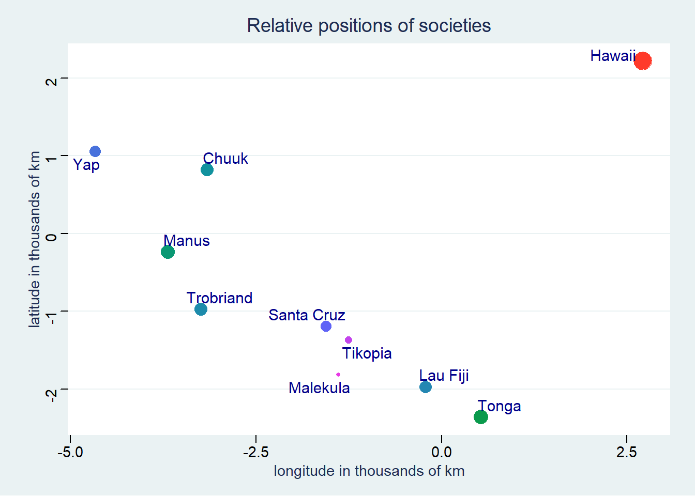
14.5.1.2 Model
We use the scientific model. See section 11.2.1, p. 356, in the Overthinking box.
\[ \begin{align*} T_i &\sim \mathcal{Poisson}(\lambda_i) \\ \lambda_i &= \frac{\alpha P_i^\beta}{\gamma} \end{align*} \]
and since we need a varying intercept we had one in a multiplicative form. We could simply add it but then it could become negative.
\[ \begin{align*} T_i &\sim \mathcal{Poisson}(\lambda_i) \\ \lambda_i &= \exp(k_{society}) \frac{\alpha P_i^\beta}{\gamma} \end{align*} \] Here \(k_{society}\) is the varying intercept. These intercept are part of a multivariate distribution. The multivariate intercept prior is defined as
\[ \begin{align*} \begin{bmatrix} k_1 \\ k_2 \\ k_3 \\ \vdots \\ k_{10} \end{bmatrix} &\sim \mathcal{MVNormal} \left( \begin{bmatrix} 0 \\ 0 \\ 0 \\ \vdots \\ 0 \end{bmatrix} , \bf{K} \right) \\ \bf{K} &= \eta^2 \exp(-\rho^2D_{ij}^2) + \delta_{ij}\sigma^2 \end{align*} \]
Note
The rest of the section comes from Kurz (2020) who did such a fantastic work at adapting the wonderful rethinking to brms. I am so grateful for the opportunity to enjoy all this.
Important
There is a lot more details and info at Kurz (2020). Please read it to get the full picture.
We could have used \(D_{ij}\) instead of \(D_{ij}^2\) for \(\bf{K}\). \(D_{ij}^2\) because of its half-Gaussian shape which is more sigmoidal in shape. As illustrated just below.
ggplot(data.frame(x = c(0, 4)), aes(x = x)) +
stat_function(aes(color = "-exp(D)"), fun = function(x) exp(-1 * x), size = 2) +
stat_function(aes(color = "-exp(D^2)"), fun = function(x) exp(-1 * x^2), size = 2) +
scale_color_paletteer_d("ggsci::alternating_igv") +
theme(legend.position = c(0.8, 0.8),
legend.title = element_blank()) +
labs(title = "Shape of function relating distance to covariance",
x = "distance", y = "correlation")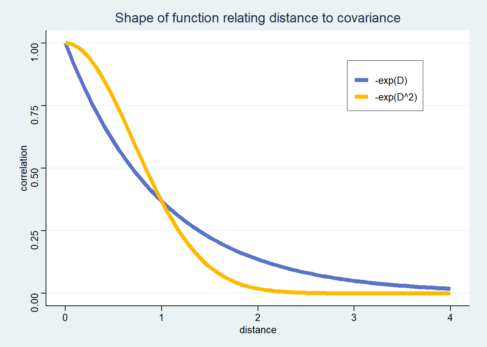
Therefore we have the model used by rethinking and the one by brms
14.5.1.2.1 rethinking model
\[
\begin{align*}
T_i &\sim \mathcal{Poisson}(\lambda_i) \\
\lambda_i &= \exp(k_{society}) \frac{\alpha Population_i^\beta}{\gamma} \\
\begin{bmatrix}
k_1 \\
k_2 \\
k_3 \\
\vdots \\
k_{10}
\end{bmatrix}
&\sim
\mathcal{MVNormal}\left(
\begin{bmatrix}
0 \\
0 \\
0 \\
\vdots \\
0
\end{bmatrix}
,
\bf{K}
\right) \\
\bf{K} &= \eta^2 \exp(-\rho^2Distance_{ij}^2) + \delta_{ij}\sigma^2 \\
\delta_{ij} &= 0 \implies \delta_{ij}\sigma^2 = 0 \; \text{because only 1 observation per island} \\
\alpha, \beta, \gamma &\sim \mathcal{Exponential}(1) \\
\eta^2 &\sim \mathcal{Exponential}(2) \\
\rho^2 &\sim \mathcal{Exponential}(0.5)
\end{align*}
\] ##### brms model
\[ \begin{align*} T_i &\sim \mathcal{Poisson}(\lambda_i) \\ \lambda_i &= \exp(k_{society}) \frac{\alpha Population_i^\beta}{\gamma} \\ \begin{bmatrix} k_1 \\ k_2 \\ k_3 \\ \vdots \\ k_{10} \end{bmatrix} &\sim \mathcal{MVNormal} \left( \begin{bmatrix} 0 \\ 0 \\ 0 \\ \vdots \\ 0 \end{bmatrix} , \bf{K} \right) \\ \bf{K_{ij}} &= sdgp^2 \exp \left(\frac{-Distance_{ij}^2}{2 \cdot lscale^2} \right) \\ \alpha &\sim \mathcal{N}(0, 1) \\ \beta, \gamma &\sim \mathcal{Exponential}(1) \\ sgdp^2 &\sim \mathcal{Exponential}(1) \\ lscale^2 &\sim \mathcal{InvGammal}(2.874624, 2.941204) \end{align*} \]
14.5.1.3 Fit
Since our model is non-linear (scientific formula) then the fit with brms uses the non-linear form.
tictoc::tic(msg = sprintf("run time of %s, use the cache.", "90 secs."))
fit14_08 <- xfun::cache_rds({
brm(
data = dataKline$nodes_df,
family = poisson(link = "identity"),
formula = bf(total_tools ~ exp(a) * population^b / g,
a ~ 1 + gp(lat_pos, lon2_pos, scale = FALSE),
b + g ~ 1,
nl = TRUE),
prior = c(
prior(normal(0, 1), nlpar = a),
prior(exponential(1), nlpar = b, lb = 0),
prior(exponential(1), nlpar = g, lb = 0),
prior(inv_gamma(2.874624, 2.941204), class = lscale, coef = gplat_poslon2_pos, nlpar = a),
prior(exponential(1), class = sdgp, coef = gplat_poslon2_pos, nlpar = a)),
iter = 2000, warmup = 1000, chains = 2,
sample_prior = TRUE,
cores = detectCores(), seed = 1433)},
file = "ch14_fit14_08", rerun = FALSE)
tictoc::toc()run time of 90 secs., use the cache.: 0.21 sec elapsedwhich gives the results
fit14_08 Family: poisson
Links: mu = identity
Formula: total_tools ~ exp(a) * population^b/g
a ~ 1 + gp(lat_pos, lon2_pos, scale = FALSE)
b ~ 1
g ~ 1
Data: dataKline$nodes_df (Number of observations: 10)
Draws: 2 chains, each with iter = 2000; warmup = 1000; thin = 1;
total post-warmup draws = 2000
Gaussian Process Terms:
Estimate Est.Error l-95% CI u-95% CI Rhat Bulk_ESS
sdgp(a_gplat_poslon2_pos) 0.50 0.34 0.14 1.42 1.00 628
lscale(a_gplat_poslon2_pos) 1.69 0.98 0.51 4.29 1.00 643
Tail_ESS
sdgp(a_gplat_poslon2_pos) 1169
lscale(a_gplat_poslon2_pos) 1068
Population-Level Effects:
Estimate Est.Error l-95% CI u-95% CI Rhat Bulk_ESS Tail_ESS
a_Intercept 0.37 0.85 -1.32 1.95 1.00 1418 1418
b_Intercept 0.25 0.09 0.07 0.43 1.00 761 446
g_Intercept 0.65 0.62 0.06 2.34 1.00 1103 946
Draws were sampled using sampling(NUTS). For each parameter, Bulk_ESS
and Tail_ESS are effective sample size measures, and Rhat is the potential
scale reduction factor on split chains (at convergence, Rhat = 1).and to have a summary similar to McElreath on p. 472 we can use
fit14_08 |>
summarize_draws("mean", "sd", ~quantile(.x, probs = c(0.055, 0.945)),
default_convergence_measures()) |>
filter(!grepl("^lp", x = variable)) |>
mutate(across(.cols = where(is.numeric), .fns = round, digits = 2),
across(.cols = starts_with("ess"), .fns = as.integer))# A tibble: 20 × 8
variable mean sd `5.5%` `94.5%` rhat ess_b…¹ ess_t…²
<chr> <dbl> <dbl> <dbl> <dbl> <dbl> <int> <int>
1 b_a_Intercept 0.37 0.85 -1.02 1.68 1 1417 1417
2 b_b_Intercept 0.25 0.09 0.11 0.38 1 761 445
3 b_g_Intercept 0.65 0.62 0.09 1.78 1 1102 946
4 sdgp_a_gplat_poslon2_pos 0.5 0.34 0.18 1.09 1 627 1169
5 lscale_a_gplat_poslon2_pos 1.69 0.98 0.64 3.52 1 642 1068
6 zgp_a_gplat_poslon2_pos[1] -0.47 0.75 -1.7 0.66 1 1131 1397
7 zgp_a_gplat_poslon2_pos[2] 0.44 0.87 -0.99 1.8 1 1521 1190
8 zgp_a_gplat_poslon2_pos[3] -0.62 0.7 -1.65 0.55 1 1335 1371
9 zgp_a_gplat_poslon2_pos[4] 0.97 0.68 -0.06 2.1 1 1013 1140
10 zgp_a_gplat_poslon2_pos[5] 0.24 0.76 -0.91 1.43 1 1366 1307
11 zgp_a_gplat_poslon2_pos[6] -1.03 0.79 -2.25 0.27 1 1079 987
12 zgp_a_gplat_poslon2_pos[7] 0.15 0.68 -0.97 1.2 1 1594 1179
13 zgp_a_gplat_poslon2_pos[8] -0.18 0.87 -1.6 1.21 1 2175 1102
14 zgp_a_gplat_poslon2_pos[9] 0.4 0.92 -1.12 1.81 1 1676 1228
15 zgp_a_gplat_poslon2_pos[10] -0.36 0.81 -1.71 0.87 1 1171 1299
16 prior_b_a -0.01 1.01 -1.62 1.58 1 1943 1719
17 prior_sdgp_a_gplat_poslon2_… 0.98 0.97 0.06 2.85 1 1737 1789
18 prior_lscale_a__1_gplat_pos… 1.51 1.31 0.49 3.59 1 2190 2046
19 prior_b_b 1.01 1.05 0.06 2.95 1 1955 1906
20 prior_b_g 1 1.02 0.06 2.96 1 1653 2050
# … with abbreviated variable names ¹ess_bulk, ²ess_tailor with posterior_summary which is simpler but lacks de ESS
posterior_summary(fit14_08) |>
round(digits = 2) Estimate Est.Error Q2.5 Q97.5
b_a_Intercept 0.37 0.85 -1.32 1.95
b_b_Intercept 0.25 0.09 0.07 0.43
b_g_Intercept 0.65 0.62 0.06 2.34
sdgp_a_gplat_poslon2_pos 0.50 0.34 0.14 1.42
lscale_a_gplat_poslon2_pos 1.69 0.98 0.51 4.29
zgp_a_gplat_poslon2_pos[1] -0.47 0.75 -1.99 0.98
zgp_a_gplat_poslon2_pos[2] 0.44 0.87 -1.32 2.13
zgp_a_gplat_poslon2_pos[3] -0.62 0.70 -1.90 0.94
zgp_a_gplat_poslon2_pos[4] 0.97 0.68 -0.28 2.39
zgp_a_gplat_poslon2_pos[5] 0.24 0.76 -1.27 1.77
zgp_a_gplat_poslon2_pos[6] -1.03 0.79 -2.55 0.59
zgp_a_gplat_poslon2_pos[7] 0.15 0.68 -1.27 1.47
zgp_a_gplat_poslon2_pos[8] -0.18 0.87 -1.92 1.55
zgp_a_gplat_poslon2_pos[9] 0.40 0.92 -1.54 2.17
zgp_a_gplat_poslon2_pos[10] -0.36 0.81 -1.99 1.20
prior_b_a -0.01 1.01 -1.97 1.87
prior_sdgp_a_gplat_poslon2_pos 0.98 0.97 0.03 3.68
prior_lscale_a__1_gplat_poslon2_pos 1.51 1.31 0.40 5.09
prior_b_b 1.01 1.05 0.02 3.91
prior_b_g 1.00 1.02 0.02 3.73
lprior -4.02 1.57 -7.77 -2.02
lp__ -51.68 3.42 -59.55 -46.0314.5.1.4 Analysis
The differences with rethinking are because brms uses non-centering. The coefficient that is really different is the \(\alpha\) in \(\lambda_i = \exp(k_{society}) \frac{\alpha P_i^\beta}{\gamma}\).
To evaluate the differences between brms and rethinking we can look at what the posterior would be like, without taking into account the covariances.
For brms we have
pop <- as.integer(c(min(dataKline$nodes_df$population),
median(dataKline$nodes_df$population),
max(dataKline$nodes_df$population)))
tools <- as.integer(c(min(dataKline$nodes_df$total_tools),
mean(dataKline$nodes_df$total_tools),
max(dataKline$nodes_df$total_tools)))
a <- fixef(fit14_08)["a_Intercept", "Estimate"]
b <- fixef(fit14_08)["b_Intercept", "Estimate"]
g <- fixef(fit14_08)["g_Intercept", "Estimate"]
# brms uses a different equation for lambda
l <- exp(a) * pop ^ b / g
prob_brms <- round(dpois(x = tools, lambda = l), 4)
prob_brms[1] 0.1099 0.0028 0.0027as opposed to `rehinking`` which would give
a <- 1.41
b <- 0.28
g <- 0.60
# rethinking uses a different equation for lambda
l <- a * pop ^ b / g
prob_rethink <- round(dpois(x = tools, lambda = l), 4)
prob_rethink[1] 0.0706 0.0437 0.0331The results between the 2 are different and cannot really be compared because
- correlations between \(D\) in
rethinkingand \(D^2\) inbrmsis not the same and brmshas a very different way of computing the likelihood
Basically, rethinking uses the following definition of \(\bf{K_{ij}}\)
\[ \bf{K_{ij}} = \eta^2 \exp \left(-\rho^2D_{ij}^2 \right) + \delta_{ij}\sigma^2 \]
where the term \(\delta_{ij}\sigma^2\) is used when \(i=j\), see p. 470 of McElreath (2020). In the oceanic case it is not applicable since we have only one observation per society. Therefore the equation is this case is
\[ \bf{K_{ij}} = \eta^2 \exp \left(-\rho^2D_{ij}^2 \right) \]
whereas brms uses
\[ \bf{K_{ij}} = sdgp^2 \exp \left(\frac{-D_{ij}^2}{2 \cdot lscale^2} \right) \]
and so the 2 equations can be compared as follows
\[ \begin{align*} \eta^2 &= sdgp^2 \\ -\rho^2 &= \frac{1}{2 \cdot lscale^2} \end{align*} \]
and we note that the distance used can always be found as follows
\[ \begin{align*} \bf{K_{ij}} &= sdgp^2 \exp \left(\frac{-D_{ij}^2}{2 \cdot lscale^2} \right) \\ \log \left( \bf{K_{ij}} \right) &= \log \left(sdgp^2 \right) + \frac{-D_{ij}^2}{2 \cdot lscale^2} \\ D_{ij}^2 &= 2 \cdot lscale^2 \cdot \left[ \log \left(sdgp^2 \right) - \log \left( \bf{K_{ij}} \right) \right] \end{align*} \]
and therefore we can figure out the covariance and convert the coefficients between brms and `rethinking``,
post14_08 <- list()
post14_08 <- within(post14_08, {
# function to compute eta squared as per rethinking
rethink_eta2 <- function(sdgp) {
sdgp^2
}
# function to compute rho squared as per rethinking
rethink_rho2 <- function(lscale) {
-1 / (2 * lscale^2)
}
# function to calculate the covariance as per brms
brms_cov <- function(x, sdgp, lscale) {
sdgp^2 * exp(-(x^2) / 2 * lscale^2)
}
})and we transform the posterior data to be able to plot as shown in figure 14.11 on p. 473
post14_08 <- within(post14_08, {
post <- tidy_draws(fit14_08)
# the median of the parameters is used later
stats <- post |>
select(prior_sdgp_a_gplat_poslon2_pos,
sdgp_a_gplat_poslon2_pos,
prior_lscale_a__1_gplat_poslon2_pos,
lscale_a_gplat_poslon2_pos) |>
median_qi(.width = 0.89)
set.seed(1433)
sampl <- post |>
select(.draw,
prior_sdgp_a_gplat_poslon2_pos,
sdgp_a_gplat_poslon2_pos,
prior_lscale_a__1_gplat_poslon2_pos,
lscale_a_gplat_poslon2_pos) |>
mutate(prior_eta2 = rethink_eta2(prior_sdgp_a_gplat_poslon2_pos),
eta2 = rethink_eta2(sdgp_a_gplat_poslon2_pos),
prior_rho2 = rethink_rho2(prior_lscale_a__1_gplat_poslon2_pos ),
rho2 = rethink_rho2(lscale_a_gplat_poslon2_pos)) |>
slice_sample(n = 50) |>
expand_grid(dist = seq(from = 0, to = 10, by = 0.05)) |>
mutate(prior_cov = brms_cov(x = dist,
sdgp = prior_sdgp_a_gplat_poslon2_pos,
lscale = prior_lscale_a__1_gplat_poslon2_pos),
cov = brms_cov(x = dist,
sdgp = sdgp_a_gplat_poslon2_pos,
lscale = lscale_a_gplat_poslon2_pos))
})
# glimpse(post14_08$stats)
# glimpse(post14_08$sampl)plot14_08 <- list()
plot14_08 <- within(plot14_08, {
prior <- post14_08$sampl |> ggplot(aes(x = dist, y = prior_cov)) +
geom_line(aes(group = .draw, color = .draw)) +
stat_function(
fun = function(x) {
post14_08$brms_cov(x = median(post14_08$sampl$dist),
sdgp = post14_08$stats$prior_sdgp_a_gplat_poslon2_pos,
lscale = post14_08$stats$prior_lscale_a__1_gplat_poslon2_pos)},
color = "firebrick", linewidth = 1) +
scale_x_continuous(breaks = scales::breaks_width(width = 2),
labels = scales::label_number_auto()) +
scale_color_paletteer_c("pals::ocean.speed") +
coord_cartesian(ylim = c(0, 2)) +
theme(legend.position = "none") +
labs(title = "Gaussian process prior",
subtitle = "Red line is the median of the covariances",
x = "distance in thousands of km",
y = "covariance")
post <- post14_08$sampl |> ggplot(aes(x = dist, y = cov)) +
geom_line(aes(group = .draw, color = .draw)) +
stat_function(
fun = function(x) {
post14_08$brms_cov(x = median(post14_08$sampl$dist),
sdgp = mean(post14_08$stats$sdgp_a_gplat_poslon2_pos),
lscale = mean(post14_08$stats$lscale_a_gplat_poslon2_pos))},
color = "firebrick", linewidth = 1) +
scale_x_continuous(breaks = scales::breaks_width(width = 2),
labels = scales::label_number_auto()) +
scale_color_paletteer_c("pals::ocean.speed") +
coord_cartesian(ylim = c(0, 2)) +
theme(legend.position = "none") +
labs(title = "Gaussian process posterior",
subtitle = "Red line is the median of the covariances",
x = "distance in thousands of km",
y = "covariance")
})
wrap_plots(plot14_08[c("prior", "post")]) +
plot_annotation(title = "Oceanic Gaussian Process") &
theme(title = element_text(color = "darkblue"))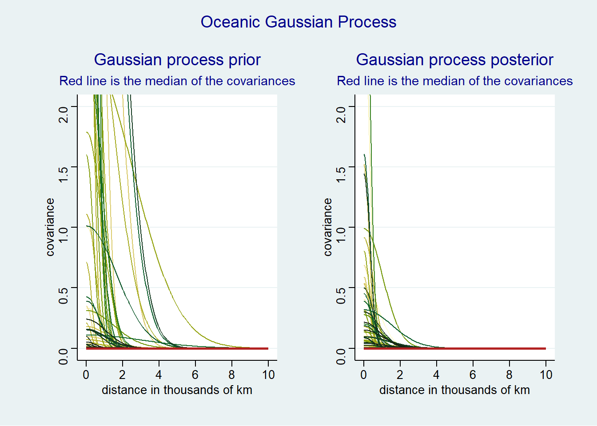
and to get the matrix of median covariance we simply map the calculation of covariance using the median values of the parameters
post14_08 <- within(post14_08, {
# the covariance matrix using the median of the parameters
# i.e. the median covariance
# The covariance is calculated based on the distance
cov <- post14_08$brms_cov(
x = dataKline$dist,
sdgp = post14_08$stats$sdgp_a_gplat_poslon2_pos,
lscale = post14_08$stats$lscale_a_gplat_poslon2_pos)
# the correlation matrix
cor <- cov2cor(cov) |>
round(digits = 2)
})
# post14_08$corwhich we can illustrate with a heatmap
heatmaply::heatmaply_cor(
x = post14_08$cor,
cellnote = post14_08$cor,
colors = unclass(paletteer::paletteer_c("pals::ocean.tempo", n = 16)),
hide_colorbar = TRUE,
main = "Correlations between Oceanic Societies in Thousands of km")and we add the correlations to our edges to be able to plot them
dataKline <- within(dataKline, {
# create the correlation dataframe
cor_df <- post14_08$cor
# set lower triangle and diagonal to 0 to avoid double values.
# zeros can be removed later
cor_df[lower.tri(cor_df, diag = FALSE)] <- NA_real_
cor_df <- cor_df |>
as.data.frame() |>
tibble::rownames_to_column(var = "x") |>
pivot_longer(cols = -x, names_to = "y", values_to = "cor") |>
# unite(col = "id", x, y, remove = FALSE) |>
# relocate(id) |>
# remove zeros
# filter(!is.na(cor)) |>
identity()
# make sure you don't miss a number
check <- sum(post14_08$cor[lower.tri(post14_08$cor, diag = TRUE)])
stopifnot(sum(cor_df$cor, na.rm = TRUE) - check == 0)
# add the correlation to the edges
edges_df <- edges_df |>
inner_join(y = cor_df, by = c("x" = "x", "y" = "y"))
stopifnot(sum(edges_df$cor, na.rm = TRUE) - check == 0)
})graph14_08 <- within(graph14_08, {
# create the graph object
# the manual layout requires a special treatment when using ggraph
# source for manual layout:
# https://stackoverflow.com/questions/67756538/plot-ggraph-using-supplied-node-coordinates
# must add the x and y coords to the nodes for manual layout to work
the_nodes <- dataKline$nodes_df |>
select(culture, x = lon2_pos, y = lat_pos, logpop)
the_edges <- dataKline$edges_df |>
filter(between(cor, 0.01, 1))
# the igraph object
grf <- the_edges |>
igraph::graph_from_data_frame(directed = FALSE,
vertices = the_nodes)
# the edges' colors
colrs <- paletteer::paletteer_c("oompaBase::bluescale", n = 16)
# the basic graph
# when we use the manual layout, when the x and y have different names to avoid
# conflicts. See the source on manual layout mentioned above
p1 <- ggraph(grf, layout = data.frame(lx = NA, ly = NA)) +
geom_node_point(aes(size = logpop), color = "purple") +
geom_edge_link(aes(color = cor, width = cor)) +
ggrepel::geom_text_repel(aes(x = x, y = y, label = name), size = 3) +
scale_size_continuous(range = c(1, 4)) +
scale_edge_width(range = c(0.25, 2)) +
scale_edge_color_gradientn(colors = colrs) +
theme(legend.position = "none") +
labs(title = "Relative positions of societies",
subtitle = "edges = correlation",
x = "longitude in thousands of km", y = "latitude in thousands of km")
# and we only need to change the nodes for the graph with tools and population
the_nodes <- dataKline$nodes_df |>
select(culture, x = logpop, y = total_tools)
the_edges <- dataKline$edges_df |>
filter(between(cor, 0.01, 1))
# the igraph object
grf <- the_edges |>
igraph::graph_from_data_frame(directed = FALSE,
vertices = the_nodes)
p2 <- ggraph(grf, layout = data.frame(lx = NA, ly = NA)) +
geom_node_point(aes(size = x), color = "purple") +
geom_edge_link(aes(color = cor, width = cor)) +
ggrepel::geom_text_repel(aes(x = x, y = y, label = name), size = 3) +
scale_size_continuous(range = c(1, 4)) +
scale_edge_width(range = c(0.25, 2)) +
scale_edge_color_gradientn(colors = colrs) +
theme(legend.position = "none") +
labs(title = "Relations between population and tools",
subtitle = "edges = correlation",
x = "log of population", y = "total tools")
})
# glimpse(dataKline$edges_df)
# glimpse(dataKline$nodes_df)
# igraph::vertex.attributes(graph14_08$grf)
# igraph::edge.attributes(graph14_08$grf)
# graph14_08$p1
# graph14_08$p2
wrap_plots(graph14_08[c("p1", "p2")]) +
plot_annotation(title = "Oceanic Gaussian Process") &
theme(title = element_text(color = "darkblue"))Warning: Using the `size` aesthetic in this geom was deprecated in ggplot2 3.4.0.
ℹ Please use `linewidth` in the `default_aes` field and elsewhere instead.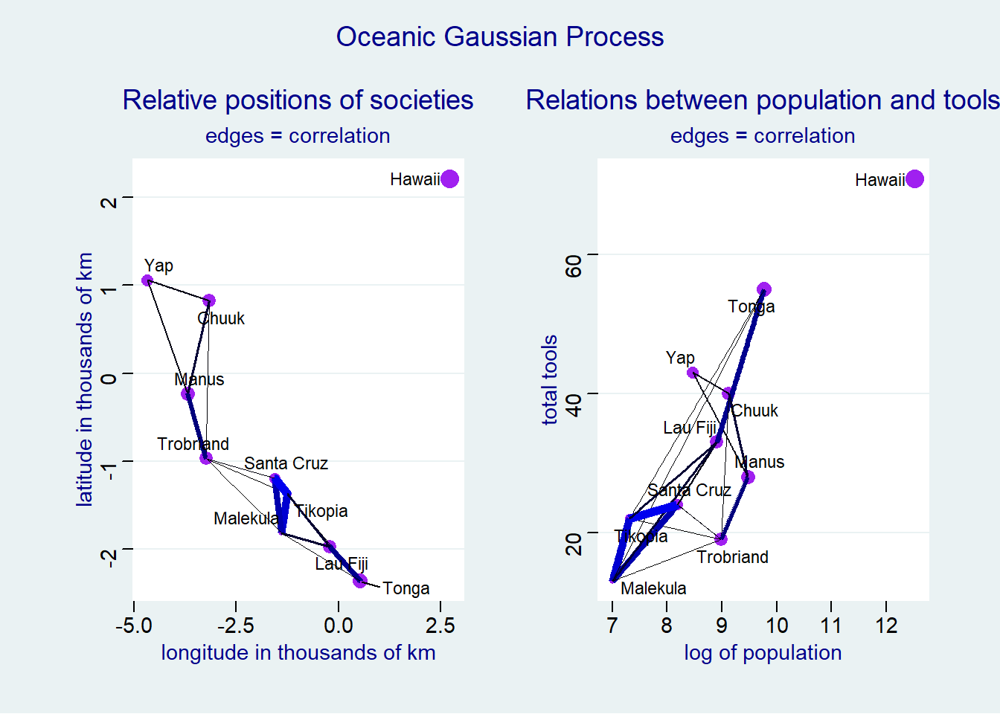
14.4 Social relations as correlated varying effects
14.4.1 Data
The research can be find in this paper. However I could not find what the variable \(dlndist\) is. I suppose it it the log of some distance . . but why is it negative? It doesn’t matter, it is only used to color the edges of the network and not in the analysis per se.
The data set can be summarized with the
skimrpackageVariable type: factor
Variable type: numeric
We can visualize the distribution of dyadic gifts using a scatter plot
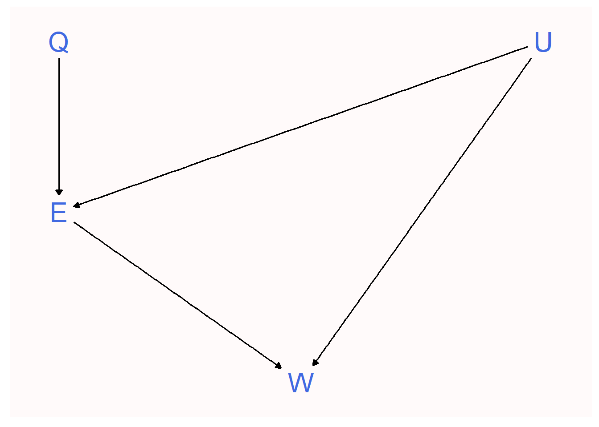
and since this a social network then we can visualize the network with the
ggnetworkpackage.For details see ggnetwork.First we need to create an igraph object. See igraph for details.
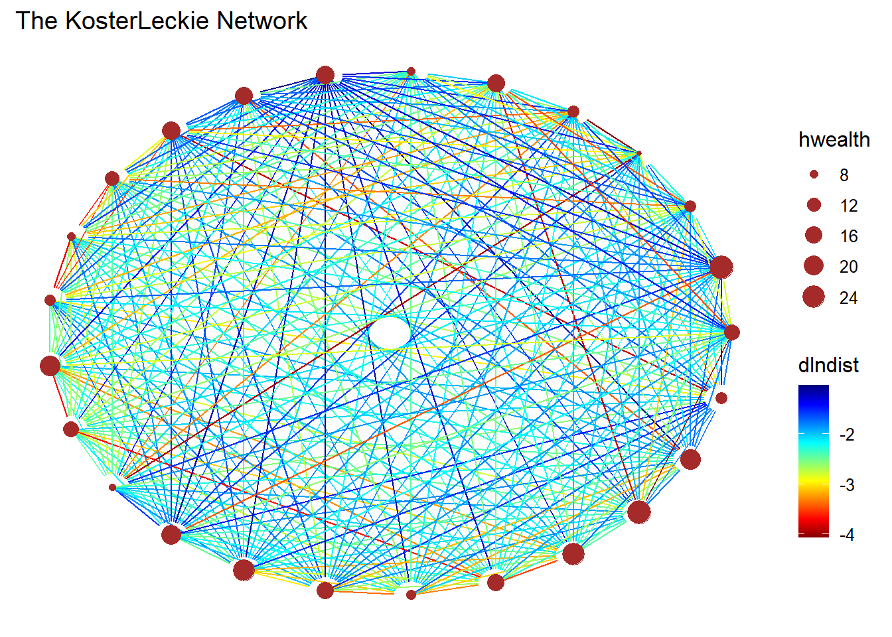
14.4.2 Model
$$ \[\begin{align*} \begin{bmatrix} y_{a \rightarrow b} \\ y_{b \rightarrow a} \\ \end{bmatrix} &\sim \begin{bmatrix} \mathcal{Poisson}(\lambda_{AB}) \\ \mathcal{Poisson}(\lambda_{BA}) \\ \end{bmatrix} \\ \log{\lambda_{AB}} &= \alpha + g_A + r_B + d_{AB} \\ \log{\lambda_{BA}} &= \alpha + g_B + r_A + d_{BA} \\ \begin{bmatrix} g_i \\ r_i \\ \end{bmatrix} &\sim \mathcal{MVNormal}( \begin{bmatrix} 0 \\ 0 \end{bmatrix}, \Sigma_{gr} ) \\ \begin{bmatrix} d_{ij} \\ d_{ji} \\ \end{bmatrix} &\sim \mathcal{MVNormal}( \begin{bmatrix} 0 \\ 0 \end{bmatrix}, \Sigma_d ) \\ \Sigma_{gr} &= \begin{bmatrix} \sigma_g & 0 \\ 0 & \sigma_r & \end{bmatrix} \cdot \begin{bmatrix} 1 & \rho_{gr} \\ \rho_{gr} & 1 \\ \end{bmatrix} \cdot \begin{bmatrix} \sigma_g & 0 \\ 0 & \sigma_r \\ \end{bmatrix} \\ \Sigma_d &= \begin{bmatrix} \sigma_d & 0 \\ 0 & \sigma_d & \end{bmatrix} \cdot \begin{bmatrix} 1 & \rho_d \\ \rho_d & 1 \\ \end{bmatrix} \cdot \begin{bmatrix} \sigma_d & 0 \\ 0 & \sigma_d \\ \end{bmatrix} \\ \sigma_d, \sigma_g, \sigma_r &\sim \mathcal{Exponential}(1) \\ \rho_{gr}, \rho_d &\sim \mathcal{LKJ}(4) \end{align*}\] $$
Kurtz says that there is no known way to use
brms. The packagebisonRthat specializes in social networks and usesbrms. It can be found at bison with a useful vignette at vignette.This section is skipped. But one day, it might be interesting to do it with the
bisonRpackage.